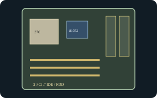

[ INDIVIDUAL COMPONENT // MOTHERBOARDS ]
Intel Desktop Board D810E2CB
Intel FlexATX Socket 370 board for Pentium III/Celeron, based on the 810E2 chipset. The model-specific technical specification documents the standard board and its firmware identity.

Exact identity and revision: Intel Desktop Board D810E2CB; Intel Technical Product Specification revision 001 (January 2001), applicable to standard boards with BIOS identifier CB81010A.86A. Verify the actual AA/PCB marking and BIOS ID; the specification update governs documented errata.
Specifications
| CPU / socket / chipset | Socket 370 Intel Pentium III/Celeron processors supported by the board/BIOS; Intel 810E2 with integrated graphics. |
|---|---|
| Form factor / case | FlexATX, 9 x 7.5 in. (228.6 x 190.5 mm); use a FlexATX chassis or verified ATX case with matching mounting and I/O clearance. |
| Memory | Two 168-pin SDRAM DIMM sockets, 100-MHz non-ECC modules, up to 512 MB supported. |
| Expansion | Two 32-bit PCI slots; no AGP slot. |
| Storage | Two IDE channels supporting ATA/100 and a floppy connector. |
| Rear I/O | VGA, PS/2 keyboard/mouse, serial, parallel, two rear USB with two additional front-header USB ports, and audio; onboard LAN is an assembly option. |
| BIOS / PSU | Intel standard BIOS identifier CB81010A.86A. 20-pin ATX power input; check the physical board, PSU pinout/rails, case wiring, and specification update before powering. |
Compatibility and revision notes
FlexATX mounting and rear-I/O alignment differ from larger boards; measure the chassis and confirm the front USB header wiring. This chipset has integrated video but no AGP connector. Use 168-pin SDRAM within Intel's density limits, and only a CPU supported by the standard CB81010A.86A firmware/AA revision.
Sources & further reading
- Intel Desktop Board D810E2CB Technical Product Specification A44673-001 (archived scan)Intel-authored specification with revision scope, BIOS identifier, layout, power, and interface information.
- Intel Desktop Board D810E2CB Specification Update A52200-006 (archived scan)Intel-authored update documenting model-specific errata and clarifications to the technical specification.